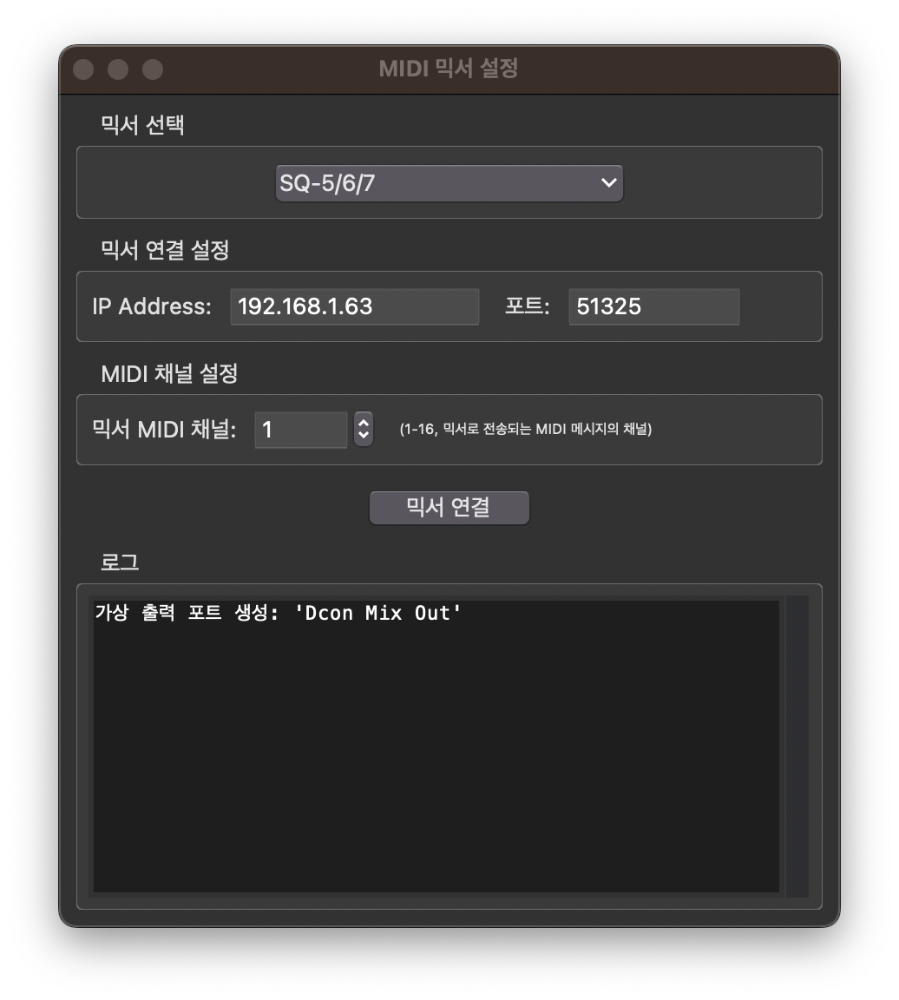

📱 앱 소개

Dcon Mix 앱 개요
Dcon Mix란?
Dcon Mix는 ProPresenter에서 보내는 MIDI 신호를 받아서 DM3, Qu-5/6/7, SQ-5/6/7 오디오 믹서를 제어하는 macOS 애플리케이션입니다. 프레젠테이션 소프트웨어와 오디오 믹서를 자동으로 연동하여 씬 변경, 채널 뮤트, 소프트키 제어 등을 자동화할 수 있습니다.
🎬 씬 리콜
ProPresenter 씬 변경 시 믹서 씬 자동 전환
🔇 뮤트 제어
슬라이드별 채널 뮤트 자동 제어
🔘 소프트키
ProPresenter에서 믹서 소프트키 트리거
🖥️ 메인 화면

Dcon Mix 메인 인터페이스
메인 화면 기능 설명
- 1 믹서 선택: 드롭다운 메뉴에서 사용할 믹서를 선택합니다. (DM3, Qu-5/6/7, SQ-5/6/7)
- 2 IP 주소 입력: 믹서의 네트워크 IP 주소를 입력합니다. (예: 192.168.4.2, 192.168.5.10)
- 3 포트 번호 입력: 통신에 사용할 포트 번호를 입력합니다. (DM3: 49900, Qu/SQ: 51325)
- 4 MIDI 채널 설정: Qu-5/6/7, SQ-5/6/7 믹서의 경우 MIDI 채널을 설정합니다. (1-16, DM3는 사용 안 함)
- 5 연결 버튼: 설정한 정보로 믹서에 연결합니다. 연결 성공 시 "연결 해제"로 변경됩니다.
- 6 로그 영역: 연결 상태, MIDI 메시지 수신, 오류 메시지 등이 실시간으로 표시됩니다.
🎯 ProPresenter 설정
1단계: MIDI 장치 추가

ProPresenter - MIDI 장치 추가
설명
ProPresenter를 실행하고 설정(Settings) → 기기(Device) 메뉴로 이동합니다.
2단계: 출력 포트 선택

ProPresenter - 출력 포트 설정
설명
왼쪽 하단의 "+" 버튼을 클릭하여 새로운 MIDI 장치를 추가합니다.
3단계: MIDI 메시지 설정

ProPresenter - MIDI 메시지 설정
설명
추가된 MIDI 장치의 출력 포트 드롭다운 메뉴에서 "Dcon Mix In"을 선택합니다. 포트가 보이지 않으면 Dcon Mix 앱이 실행 중인지 확인하세요.
4단계: 설정 확인

ProPresenter - 최종 설정 확인
설명
설정이 완료되면 MIDI 장치 목록에 추가된 장치가 표시됩니다. Dcon Mix 앱에서 믹서에 연결한 후 ProPresenter에서 슬라이드를 실행하여 테스트합니다.
ProPresenter 연동 단계
- ProPresenter를 실행하고 설정(Settings) → 기기(Device) 메뉴로 이동합니다.
- 왼쪽 하단의 "+" 버튼을 눌러 MIDI 장치를 생성합니다.
- 출력 포트에서 "Dcon Mix In"을 선택합니다.
- Dcon Mix 앱에서 믹서에 연결한 후 테스트합니다.
⚙️ 매크로 설정
1단계: 매크로 생성

매크로 설정 화면 - 매크로 생성
설명
ProPresenter에서 "매크로" 탭으로 이동합니다. 왼쪽 하단의 "+" 버튼을 클릭하여 새로운 매크로를 생성합니다.
2단계: MIDI 작업 추가

매크로 설정 화면 - MIDI 작업 추가
설명
생성된 매크로를 마우스 우클릭하여 컨텍스트 메뉴를 엽니다. [작업 추가 → 커뮤니케이션 → (ProPresenter 설정에서 생성한 MIDI 기기 이름) → MIDI 노트 켬]을 선택합니다.
3단계: MIDI 메시지 설정

매크로 설정 화면 - MIDI 메시지 설정
설명
MIDI 노트 켬 작업을 추가하면 설정 창이 열립니다. 이 창에서 채널(Channel), 타입(Type), Note, Velocity 값을 설정합니다. 사용하려는 기능에 따라 값이 달라집니다.
매크로 사용법 가이드
매크로 설정 시 사용하는 각 항목의 의미와 설정 방법을 아래 표에서 확인하세요.
| 항목 | 설명 | 설정 범위/값 | 예시 |
|---|---|---|---|
| Channel (채널) |
MIDI 채널 번호로, 기능별로 다른 채널을 사용합니다. | 0, 1, 2 |
• 소프트키: 채널 0 • 씬 리콜: 채널 1 • 뮤트 제어: 채널 2 |
| Type (타입) |
MIDI 메시지의 종류를 선택합니다. | Note On, Note Off |
• 씬 리콜: Note On • 뮤트 On: Note On • 뮤트 Off: Note Off |
| Note (노트) |
제어할 대상의 번호를 나타냅니다. 실제 값은 괄호 안의 번호에서 1을 더한 값입니다. | 0-99 |
• 씬 1 → Note 0 • 씬 2 → Note 1 • 채널 1 → Note 0 • 소프트키 1 → Note 0 |
| Velocity (벨로시티) |
메시지의 강도나 상태를 나타냅니다. | 0-127 |
• 뮤트 On: 1 • 뮤트 Off: 0 • Note On: 1 • Note Off: 0 |
기능별 설정 예시
| 기능 | Channel | Type | Note 계산 | Velocity |
|---|---|---|---|---|
| 씬 리콜 | 1 | Note On | 씬 번호 - 1 (예: 씬 3 → Note 2) |
1 |
| 뮤트 On | 2 | Note On | 채널 번호 - 1 (예: 채널 5 → Note 4) |
1 |
| 뮤트 Off | 2 | Note Off | 채널 번호 - 1 (예: 채널 5 → Note 4) |
0 |
| 소프트키 (Qu/SQ만) |
0 | Note On/Off | 소프트키 번호 - 1 (예: 소프트키 2 → Note 1) |
1 |
🚀 빠른 시작
5분 안에 시작하기
- Dcon Mix 앱 실행
앱을 실행하면 자동으로 가상 MIDI 포트 "Dcon Mix In"이 생성됩니다. - 믹서 선택 및 연결
메인 화면에서 사용할 믹서를 선택하고 IP 주소와 포트를 입력한 후 "믹서 연결" 버튼을 클릭합니다. - ProPresenter 설정
ProPresenter의 설정 → 기기 메뉴에서 MIDI 장치를 추가하고 출력 포트를 "Dcon Mix In"으로 설정합니다. - MIDI 메시지 설정
슬라이드나 액션의 MIDI 탭에서 원하는 기능(씬 리콜, 뮤트 제어 등)을 설정합니다. - 테스트
ProPresenter에서 슬라이드를 실행하여 믹서가 올바르게 반응하는지 확인합니다.